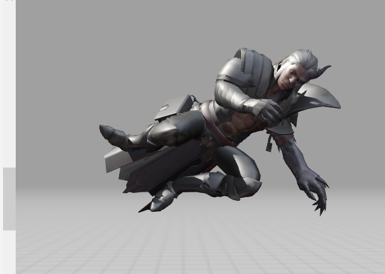
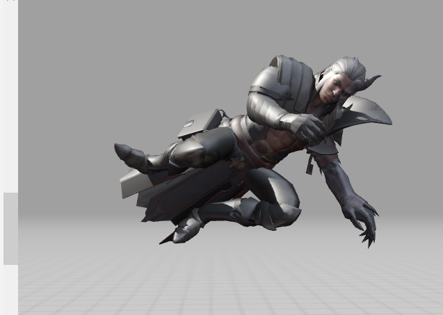

Creación de Videos con Pantalla Verde y Efectos Especiales
La utilización de la pantalla verde, también conocida como croma o chroma key, es una técnica ampliamente utilizada en la producción de videos para lograr efectos visuales impresionantes y creativos. En este documento, exploraremos cómo funciona la pantalla verde y cómo se pueden aplicar efectos especiales para mejorar la calidad y la narrativa de los videos.
¿Qué es la Pantalla Verde?
La pantalla verde es una técnica que implica grabar a un sujeto frente a un fondo de color uniforme, generalmente verde o azul. Posteriormente, en la postproducción, ese fondo de color se elimina y se reemplaza con otro contenido visual. Esta técnica permite combinar elementos de diferentes escenas o añadir fondos virtuales, lo que resulta en efectos visuales sorprendentes.Producción de Videos con Pantalla Verde: Optimización y Verificación Frame por Frame
La producción de videos con pantalla verde ha revolucionado la industria, permitiendo la creación de efectos visuales impresionantes. En este documento, nos enfocaremos en optimizar esta técnica y asegurar la verificación frame por frame para obtener resultados profesionales y detallados.
Iluminación Precisa: Garantiza una iluminación uniforme en la pantalla verde, eliminando sombras que puedan afectar la edición.
Selección de Color: Escoge un color de fondo que contraste adecuadamente con el sujeto para facilitar la separación durante la edición.
Calidad de Material: Utiliza materiales de alta calidad para la pantalla verde, evitando arrugas o irregularidades que puedan dificultar la edición.
Pantalla Verde Optimizada
La pantalla verde es esencial para el éxito de esta técnica. Aquí hay algunas consideraciones clave para su optimización:Iluminación Precisa: Garantiza una iluminación uniforme en la pantalla verde, eliminando sombras que puedan afectar la edición.
Selección de Color: Escoge un color de fondo que contraste adecuadamente con el sujeto para facilitar la separación durante la edición.
Calidad de Material: Utiliza materiales de alta calidad para la pantalla verde, evitando arrugas o irregularidades que puedan dificultar la edición.
Creación de Fondos para Videos: Técnicas y Consejos
Podemos moldear imagenes para crear fondos
La elección y creación de fondos para videos desempeña un papel crucial en la calidad y la estética visual de cualquier producción. En este documento, exploraremos diversas técnicas y proporcionaremos consejos para optimizar la creación de fondos que complementen y realcen tu contenido audiovisual.
Importancia de Fondos Atractivos
Los fondos desempeñan un papel crucial al establecer el tono, la atmósfera y la cohesión visual de un video. Un fondo bien diseñado no solo mejora la estética general, sino que también puede reforzar la narrativa y la comunicación de la información.
Explorando la Creación de Logos Animados: Un Análisis Detallado Frame por Frame de Imágenes 2D
Nuestra primera interaccion con la cracion de un Logo
La animación de logos ha evolucionado significativamente con la introducción de técnicas avanzadas y herramientas digitales. Este documento explora a fondo el proceso de creación de logos animados, centrándose en el minucioso análisis frame por frame de imágenes en dos dimensiones (2D).A medida que avanzamos en la era digital, el arte de animar logos se ha vuelto una habilidad esencial para captar la atención del espectador y transmitir mensajes de manera dinámica. Desde los conceptos básicos hasta las técnicas más avanzadas, este documento guiará a los creadores a través de los pasos esenciales para lograr logos animados impactantes y memorables.
 
